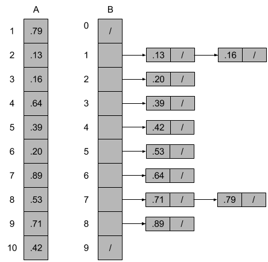

8.4 Bucket sort
8.4-1

8.4-2
The worst-case can happen when it takes too long to sort list B[i]. Because the worst-case running time of insertion sort is $\Theta(n^2)$, if for a given B[i], which happens to contain all elements, then the insertion sort takes $\Theta(n^2)$, thus the worst-case running time becomes $\Theta(n^2)$.
We can use another sort algorithm to sort B[i], for example, the mergesort algorithm.
8.4-3
We have:
$$ \begin{eqnarray} X &=& I\lbrace\text{the number of heads in two flips of a fair coin}\rbrace \\ &=& \begin{cases} 0 \\ 1 \\ 2 \\ \end{cases} \end{eqnarray} $$
And $Pr\lbrace \text{the number of heads in two flips is } 0\rbrace = \frac{1}{4}$, $Pr\lbrace \text{the number of heads in two flips is } 1\rbrace = \frac{1}{2}$, $Pr\lbrace\text{the number of heads in two flips is } 2\rbrace = \frac{1}{4}$.
So $E[X] = 0 * \frac{1}{4} + 1 * \frac{1}{2} + 2 * \frac{1}{4} = 1$. Thus $E[X^2] = 0^2 * \frac{1}{4} + 1^2 * \frac{1}{2} + 2^2 * \frac{1}{4} = \frac{3}{2}$, $(E[X])^2 = 1$.
8.4-4
Since the points are uniformly distributed, the probability of finding a point in any region of the circle is proportional to the area of that region. We can divide the unit circle into n parts, each part has area $\frac{\pi}{n}$.
To make it simple, we can create n - 1 concentric circles inside the unit circle. Let $a_1$ be the first circle, so the unit circle is $a_n$. The area of $a_1$ is $\frac{\pi}{n}$, so we have $r_{a_1} = \frac{1}{\sqrt{n}}$. Notice that $\pi{r_{a_k}^2} - \pi{r_{a_{k - 1}}^2} = \frac{\pi}{n}$, so:
$$ \begin{eqnarray} r_{a_2}^2 - r_{a_1}^2 &=& \frac{1}{n} \\ r_{a_3}^2 - r_{a_2}^2 &=& \frac{1}{n} \\ \ldots \\ r_{a_k}^2 - r_{a_{k - 1}}^2 &=& \frac{1}{n} \end{eqnarray} $$
So we add the equations together and have $r_{a_k}^2 - r_{a_1}^2 = \frac{k - 1}{n}$, thus $r_{a_k} = \sqrt{\frac{k}{n}}, 1 \leq k \leq n$.
Now we can create the buckets $[0, \sqrt{\frac{1}{n}}), [\sqrt{\frac{1}{n}}, \sqrt{\frac{2}{n}}), \ldots, [\sqrt{\frac{n - 1}{n}}, 1]$. In order to sort the n points by their distance $d_i = \sqrt{x_i^2 + y_i^2}$, let array A contains the n points ($A[i] = d_i$), then create an empty array B, and insert A[i] into $B[\lfloor nA[i] \rfloor]$, at last, we sort B[i] and concatenate the lists B[i].
8.4-5
It's similar like bucket sort. We have $P(x) = \text{Pr}\lbrace X \leq x \rbrace$, so $P(1) = \text{Pr}\lbrace X \leq 1 \rbrace, P(2) = \text{Pr}\lbrace X \leq 2 \rbrace, \ldots, P(n) = \text{Pr}\lbrace X \leq n \rbrace$. Thus $P(n) - P(n - 1) = \text{Pr}\lbrace n - 1 < X \leq n \rbrace$. So we can create the buckets $[0, P(1)), [P(1), P(2)), \ldots, [P(n - 1), P(n)]$.
In order to apply bucket sort, we let $A[i] = P(X_i)$, thus, we can use the bucket sort. At last, we have a list of sorted $P(X_i)$, which is also a list of sorted $X_i$.